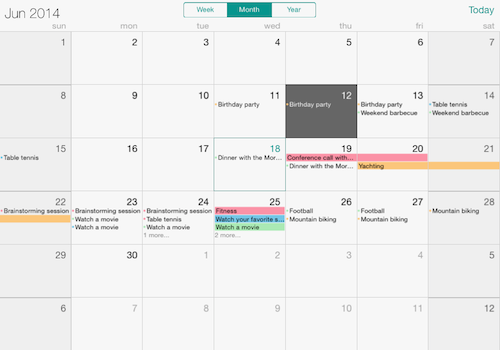
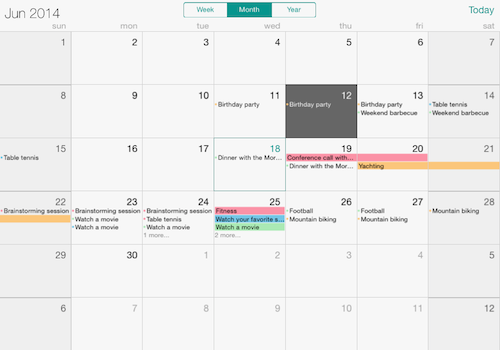
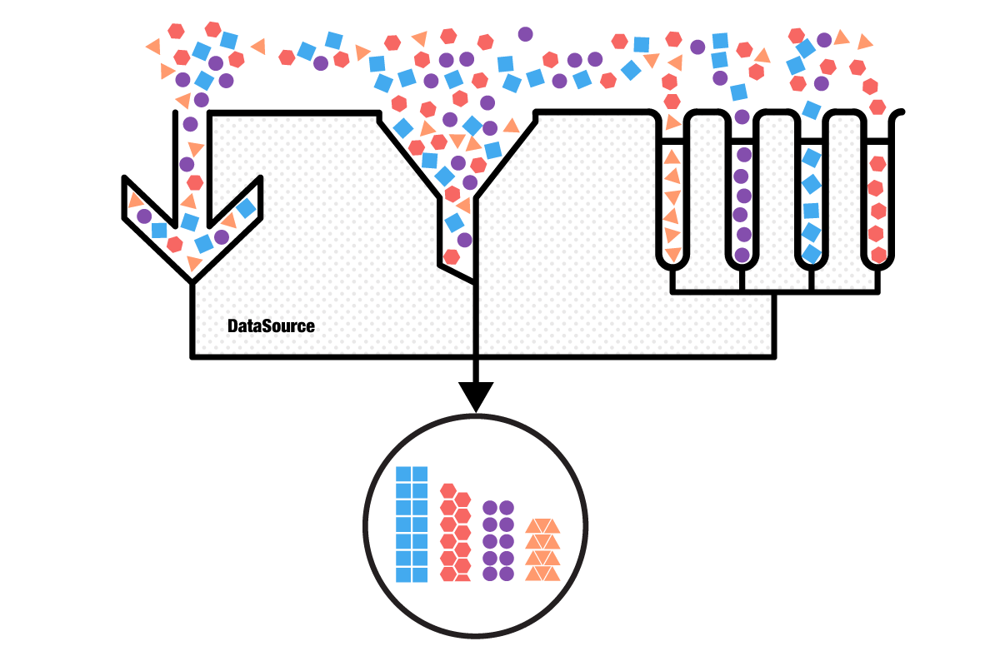
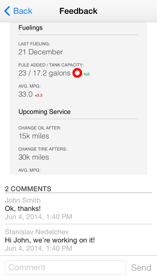
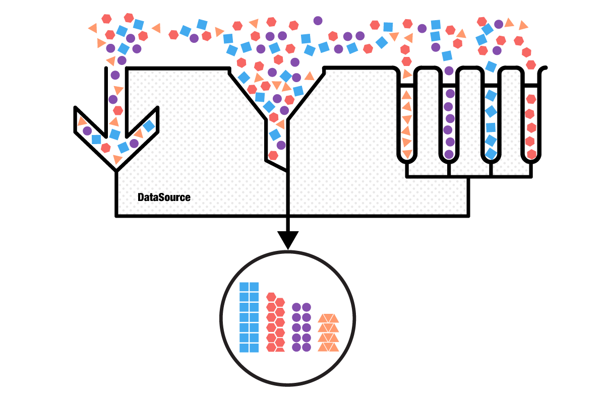
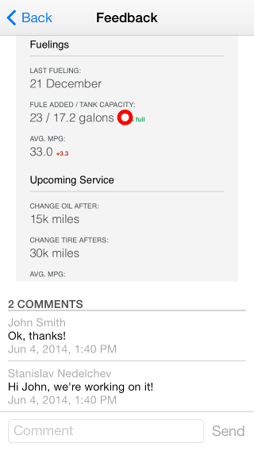

# UI for iOS: Overview
Telerik UI for iOS suite delivers functionalities, built with performance in mind, that allow you to build unique and visually stunning iOS applications. Getting started and integrating the Telerik UI for iOS components in your Xcode project is very straightforward thanks to the easy to use API. The methods and properties are self-explanatory, the architecture is easy to follow. Our controls give you great customization flexibility to accommodate as many app scenarios as possible.
Here are the available UI for iOS component at a glance:
**Chart** is a versatile charting component that offers full customization, great performance and intuitive object model. Its API allows creating complex charts with stunning animations and appearance.
TKChart main features include:
- Various series types: bar, column, line, spline, area, pie, donut, scatter, bubble, financial series and indicators.
- Stacking of bar, column, line and area series including stack 100 mode.
- Pan/Zoom and selection functionality.
- Animations that use the CoreAnimations and UIKit dynamics.
- Multiple axes.
 **Calendar** is a calendar control that features week, month and year views as well as multiple dates selection and flexible API for customization. TKCalendar main features include:
- Week, Month and Year Views.
- Support for Events - custom or provided by the EventKit.
- Single, Multiple and Range Selection.
- Localization.
- Flexible styling API.

**ListView** provides the most frequently used functionalities associated with a ListView scenario in one framework, eliminating the overhead of integrating multiple solutions from different authors. To make working with data easier for developers, the control works seamlessly with the **DataSource** control, which serves as a mediator between the raw data that needs to be displayed and the UI component. Here are the features at a glance:
- Different layouts
- Single column
- Multiple columns
- UI virtualization
- Pull-to-refresh
- Load-on-demand
- Displaying data in groups
- Items swipe behavior
- Items reorder behavior
- Item animations
- Single/multiple selection on tap/hold
**SideDrawer** helps you add extra space to your application. It extends the popular slide-out design pattern which is mainly associated with navigational purposes. The control is highly customizable and allows developers to embed any type of content inside the sliding panel. The SideDrawer feature set includes:
- Different transition modes:
- Push
- Reveal
- Reverse slide out
- Slide along
- Slide in on top
- Scale up
- Fade in
- Support for custom content
- Section headers
- Ability to appear from all four edges
- Ability to appear on swipe or button click
**Calendar** is a calendar control that features week, month and year views as well as multiple dates selection and flexible API for customization. TKCalendar main features include:
- Week, Month and Year Views.
- Support for Events - custom or provided by the EventKit.
- Single, Multiple and Range Selection.
- Localization.
- Flexible styling API.

**ListView** provides the most frequently used functionalities associated with a ListView scenario in one framework, eliminating the overhead of integrating multiple solutions from different authors. To make working with data easier for developers, the control works seamlessly with the **DataSource** control, which serves as a mediator between the raw data that needs to be displayed and the UI component. Here are the features at a glance:
- Different layouts
- Single column
- Multiple columns
- UI virtualization
- Pull-to-refresh
- Load-on-demand
- Displaying data in groups
- Items swipe behavior
- Items reorder behavior
- Item animations
- Single/multiple selection on tap/hold
**SideDrawer** helps you add extra space to your application. It extends the popular slide-out design pattern which is mainly associated with navigational purposes. The control is highly customizable and allows developers to embed any type of content inside the sliding panel. The SideDrawer feature set includes:
- Different transition modes:
- Push
- Reveal
- Reverse slide out
- Slide along
- Slide in on top
- Scale up
- Fade in
- Support for custom content
- Section headers
- Ability to appear from all four edges
- Ability to appear on swipe or button click
 **TKDataSource** is a non-visual component that consumes data from various sources. It supports data shaping operations like sorting, filterign and grouping. It adopts the most used data enabled UI controls in iOS: UITableView and UICollectionView to automate the presentation of its data. TKDataSource works perfecltly with TKListView, TKChart and TKCalendar too.

**AppFeedback** enables your end-users to provide feedback inside your app by simply shaking their device or navigating to the feedback option. Once invoked, the component will automatically take a screenshot and prompt users to point to their issue and provide a comment. The users can then track the feedback they've submitted, viewing its status or supplying additional comments. The component's seamless integration with AppFeedback (a part of the Telerik Platform) allows for organizing and reviewing all feedback items, assigning those to members in your Telerik Platform workspace and responding directly to users. The end result is actionable feedback, and easy interaction between your users and team members.

**TKDataSource** is a non-visual component that consumes data from various sources. It supports data shaping operations like sorting, filterign and grouping. It adopts the most used data enabled UI controls in iOS: UITableView and UICollectionView to automate the presentation of its data. TKDataSource works perfecltly with TKListView, TKChart and TKCalendar too.

**AppFeedback** enables your end-users to provide feedback inside your app by simply shaking their device or navigating to the feedback option. Once invoked, the component will automatically take a screenshot and prompt users to point to their issue and provide a comment. The users can then track the feedback they've submitted, viewing its status or supplying additional comments. The component's seamless integration with AppFeedback (a part of the Telerik Platform) allows for organizing and reviewing all feedback items, assigning those to members in your Telerik Platform workspace and responding directly to users. The end result is actionable feedback, and easy interaction between your users and team members.
